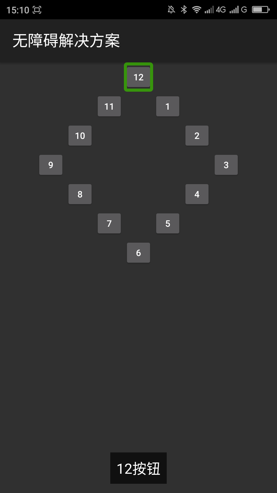

设置控件焦点导航的顺序____20160510
【问题描述】
用户使用焦点导航的时候，焦点是通过从一个控件传递到另一个控件，这由焦点命令来确定其指向。焦点移动命令是根据一种算法，意在在某一特定方向上寻找相邻的元素。在极少数情况下，默认的算法可能不匹配具体的命令，从而不符合你的用户界面。这个算法是从左到右、从上到下的进行焦点导航的。有时候这种默认的焦点导航顺序会让利用焦点导航的用户无法理解视图界面，例如界面上利用按钮布局成一个时钟，按照默认的焦点导航这个时钟会导航的很混乱。
【问题解决方案描述】
当焦点顺序不符合需要的时候可以用xml属性和代码进行修改。修改焦点顺序的xml属性有： android:nextFocusDown、android:nextFocusUp、android:nextFocusLeft、android:nextFocusRight；在代码中可以使用setNextFocusDownId()、setNextFocusUpId()、setNextFocusLeftId()、setNextFocusRight()。这4个属性、方法分别控制上、下、左、右方向的下一个焦点的控件。属性和方法提供的值都是下一个控件的id。 注：此解决方案针对焦点导航的设备的焦点顺序有效，如键盘，d-pad导航，轨迹球等，对于触摸屏导航的焦点不一定有效。
【前后效果图对比】
|  | |
| 优化前，键盘焦点顺序为：12-11-1-10-2-9-3-8-4-7-5-6； | 优化后，键盘焦点顺序为：12-1-2-3-4-5-6-7-8-9-10-11-12； |
【扩展】
【更多】
【附1】 style/clockFaceNum文件